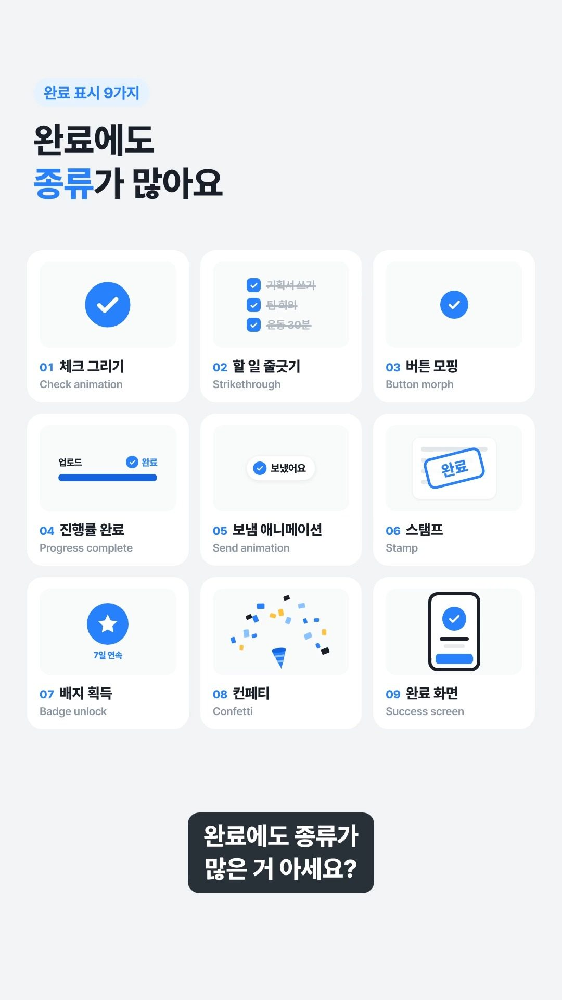

테크 · 릴스 · 2026-11-23
UI 완료 표시 9가지와 그 이름
체크 그리기부터 완료 화면까지 UI의 완료 표시 9가지를 소개하며, 일이 클수록 축하도 크게 하는 것이 기준이라고 설명한다.

- 완료 표시는 체크 그리기, 할 일 줄긋기, 버튼 모핑, 진행률 완료, 보냄 애니메이션, 스탬프, 배지 획득, 컨페티, 완료 화면의 9가지로 나뉜다.
- 체크가 슥 그려지는 것은 체크 그리기, 할 일에 줄이 그어지는 것은 할 일 줄긋기라고 부른다.
- 버튼이 빙글 돌다 체크로 바뀌는 것은 버튼 모핑, 바가 차고 완료로 바뀌는 것은 진행률 완료다.
- 슉 날아가는 것은 보냄 애니메이션, 쾅 찍히는 것은 스탬프다.
- 제대로 축하하고 싶을 때는 배지 획득, 컨페티, 완료 화면을 사용한다.
- 작은 일은 체크 그리기나 할 일 줄긋기로 가볍게, 큰 일은 배지 획득이나 완료 화면으로 크게 축하한다.
- 일이 클수록 축하도 크게 하는 것이 완료 표시 선택의 기준이다.